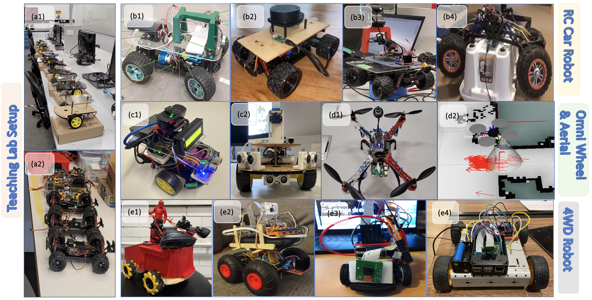
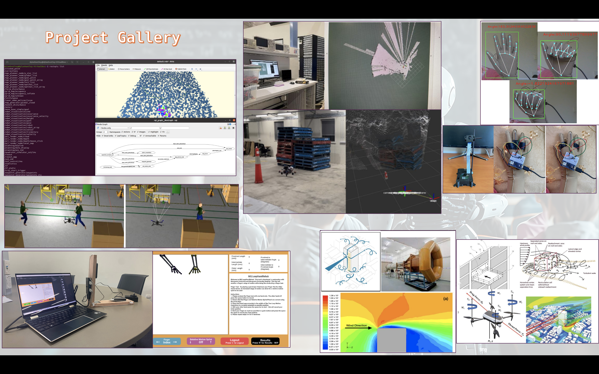

<!----------------------------------------------------------------
------------------------ Research Section -----------------------
----------------------------------------------------------------->
<section id="research" class="research">
  <div class="container">
    <div class="section-title">
      <h2>Research and Mentorship</h2>
      <p>Mentoring Students</p>
    </div>

    <hr>            
    <h4>Mentoring Students in the Faculty of Science and Engineering</h4>
    <hr>

    <div class="whole-wrap">
      <div class="container">
        <div class="section-top-border">
          <div class="row">
            <div class="col-lg-12">
              <p>
                I have had the privilege of collaborating with and mentoring undergraduate and postgraduate students at Macquarie University's Faculty of Science and Engineering. 
                Below is a list of the individuals I have worked with, along with the associated projects.
              </p>

              <br>
              <a href="https://github.com/AliceJames-1/MecQaBot" target="_blank">
                
              </a>
              
              <br><br>

              <!-- New Presentation Highlight Section -->
              <div style="background: #f9f9f9; padding: 20px; border-radius: 12px; margin-bottom: 25px; border: 1px solid #eee;">
                <p style="font-style: italic; margin-bottom: 15px;">
                  Our first experience as primary supervisors within the Faculty of Science and Engineering (FSE) has been a rewarding success, with the 2026 cohort delivering highly engaging slides and interactive frontend simulation dashboards[cite: 2]. From aerial robotic manipulation hardware designs to advanced swarm relative VIO navigation tracking, these diverse student projects highlight a fantastic semester of technical growth and smooth collaborative delivery that sets a wonderful milestone for our supervisory journey[cite: 2].
                </p>
                
              </div>

              <ol>
                <li><strong>Jonathan Faure</strong> (Mechatronics Engineering Undergraduate) - RA/ Internship Topic: Anchor-Free Cooperative Payload Transfer via Decentralised UAV State Estimation and Multi-Model Communication (2026)</li>
                <li><strong>Tarun Gangolli</strong> (Electrical and Electronic Engineering Undergraduate) - Thesis Topic: Drone (UAV) Positioning based on sensor fusion data: IMU, LiDAR and Camera (2026)</li>
                <li><strong>Dheeraj Venkataramana Murthy</strong> (Electronics Engineering Masters) - Thesis Topic: Drone Landing Risk Predictor (2026)</li>
                <li><strong>Ahmad Azimi</strong> (Software Engineering Undergraduate) - Thesis Topic: Flying Basket: An Intelligent Shopping Assistant with AI-Powered Following and Smart Market Integration (2026)</li>
                <li><strong>Aryan Kumar</strong> (Software Engineering Undergraduate) - Thesis Topic: Flying Basket: An Intelligent Shopping Assistant with AI-Powered Following and Smart Market Integration (2026)</li>
                <li><strong>Emmanuel Almonte</strong> (Software Engineering Undergraduate) - Thesis Topic: Flying Basket: An Intelligent Shopping Assistant with AI-Powered Following and Smart Market Integration (2026)</li>
                <li><strong>Ibrahim Omeroglu</strong> (Software Engineering Undergraduate) - Thesis Topic: Flying Basket: An Intelligent Shopping Assistant with AI-Powered Following and Smart Market Integration (2026)</li>
                <li><strong>Mohammad Nazimuddin</strong> (Software Engineering Undergraduate) - Thesis Topic: Drone Swap System Control Verification (2026)</li>
                <li><strong>Nathan Hingee</strong> (Software Engineering Undergraduate) - Thesis Topic: Swarm Relative VIO Navigation (2026)</li>   
                <li><strong>Om Sharma</strong> (Mechatronics Engineering Undergraduate- School of Engineering) - Thesis Topic: Drone Swap System Control Verification (2026), Internship Topic: Event-Driven Neuromorphic Architecture for Real-Time Distributed Drone Swarm Communication in GPS-Denied Environments.</li>            
                <li><strong>Nadiyah Ahmed</strong> (Software {AI} Engineering Postgraduate School of Computing) - Internship Topic: AI-Driven Marine Sensing Buoy for Smart Nature and Living Seawall Conservation</li>            
                <li><strong>Rumeth Herath</strong> (Software Engineering Undergraduate- School of Computing) - Thesis Topic: Drone Detection for Privacy Preservation(2025) [Best Undergraduate Thesis Award]</li>
                <li><strong>Guven Gemikonakli</strong> (Software Engineering Undergraduate- School of Computing) - Thesis Topic: Collaborative Drone Monitoring in Marine Environments (2025)</li>
                <li><strong>Ashton Lane</strong> (Software Engineering Undergraduate- School of Computing) - Thesis Topic: Drone swarm and AI pollution localisation architecture (2025)</li>
                <li><strong>Dylan Huntley</strong> (Mechatronics Undergraduate- School of Engineering) - Thesis Topic: UAV Positioning based on Sensor Fusion: IMU, LIDAR and Visual(2024)</li>
                <li><strong>Paras Raj Dongol</strong> (Mechatronics Undergraduate- School of Engineering) - Thesis Topic: Using sensor fusion to enhance SLAM techniques for autonomous navigation of UAVs (2024)</li>
                <li><strong>Sebastian Schroder</strong> (Research Assistant) - MQ Drone Lab - Project Topic: UAV SLAM Techniques, Autonomous Landing, and Real-World Experiments (2024)</li>              
                <li><strong>Natalia Chatrath</strong> (Mechatronics Undergraduate- School of Engineering) - Thesis Topic: Optimising 3D Simultaneous Localisation and Mapping for Indoor UAVs (2023)</li>
                <li><strong>Miriam Youssef</strong> (Mechatronics Undergraduate- School of Engineering) - Thesis Topic: Sensor Fusion for UAVs used to survey and map construction sites (2023)</li>
                <li><strong>Islam Alkhalaeileh</strong> (Mechatronics Undergraduate- School of Engineering) - Thesis Topic: Deep Learning Enabled End to End Control of Drone (UAV) Flight (2023)</li>
                <li><strong>Dylan Welgemoed</strong> (Software Engineering Undergraduate - School of Computing) - Thesis Topic: Deep Learning Enabled End-to-End Flight Control of a UAV (2023)</li>
                <li><strong>Eli Mana, Faiyaz Rahman, Reza Pakravan</strong> (Mechatronics Undergraduate - School of Engineering) - Project Topic: IoT | Sensor Applications related (2023)</li>
                <li><strong>Ethan Darnley</strong> (Software Undergraduate - School of Computing) - Thesis Topic: AGV transversability for off the road applications (2022)</li>
                <li><strong>James Zambelli</strong> (Mechatronics Undergraduate - School of Engineering) - Thesis Topic: Aerodynamics Effect Analysis of UAVs (VTOL) near Building Structures (2022)</li>
                <li><strong>Lachlan Rowley</strong> (Software Engineering Undergraduate - School of Computing) - Thesis Topic: Machine Learning-Based Hand Therapy with Leap Motion Controller and Unity (2022)</li>
                <li><strong>Timothy Ruston</strong> (Mechatronics Undergraduate - School of Engineering) - Thesis Topic: Tomato Detecting Robot Using Computer Vision (2022)</li>
                <li><strong>Ben Cavanagh (Michael)</strong> (Software Engineering Undergraduate - School of Computing) - Thesis Topic: Deep Learning Driven Software System for Autonomous UAV Swarm Formation (2022)</li>
                <li><strong>Issac Senn, Justin Dale</strong> (Mechatronics Undergraduate - School of Engineering) - Project Topic: Worked on Drone Project YOLOv5 Over Summer (2022)</li>
                <li><strong>Cameron Aume</strong> (Mechatronics Undergraduate - School of Engineering) - Project Topic: TrackInk: An IoT-Enabled Real-Time Object Tracking System in Space (2022)</li>              
                <li><strong>Humira Zaman</strong> (Mechatronics Undergraduate - School of Engineering) - Thesis Topic: Hand Tracker Using Computer Vision for Rehabilitation (2021)</li>
                <li><strong>Xian (Henry) Zheng</strong> (Mechatronics Undergraduate - School of Engineering) - Thesis Topic: Study of Fabricating a Low-Cost, Edge Computing Radio Receiver that Can Detect and Classify GPS, ADS-B, and AIS Signals (2021)</li>
                <li><strong>Kevin Pham, James Greer</strong> (Mechatronics Undergraduate - School of Engineering) - Thesis Topic: Effects of Music on EEG-based Brainwaves (2021)</li>
                <li><strong>Mohammed Mahbubur Rahman, Anik Faisol</strong> (Mechatronics Postgraduate - School of Engineering) - Thesis Topic: Smart City Project: Environmental Monitoring Using Multi-Modal Sensor Nodes (2021)</li>
                <li><strong>Ayman Shaik</strong> (Mechatronics Undergraduate - School of Engineering) - Thesis Topic: Comparing Computer Vision Sensing Techniques with Different Camera Models for Machine Learning (2021)</li>
                <li><strong>Neil Roberts</strong> (Software Engineering Undergraduate - School of Computing) - Thesis Topic: Hand Therapy: Remote Monitoring for Hand Exercises/Rehabilitation for Patients (Comp. Student) (2021)</li>
              </ol>

            </div>
          </div>
        </div>
      </div>
    </div>

  </div> <!-- End container -->
</section><!-- End Research Section -->


  
